STUDIO A. ／ A 組
DAY 2 / 3業務部 · 門市銷售數據 ＋ 財會
把你的報表，
變成我們的系統。
STUDIO A ｜ Day 2 / 3 —— 大家共用 · 有門禁 · 自己就改得動的部門 Dashboard。
回收 D1開場
上週，你們做出來了。
今天 —— 搬進來。
回收 D1 · 10 MIN
2
回收 D1然後呢
13 份週報、13 個樣子、
13 台電腦。
傳 LINE 出去的是死檔案 —— 數字隔天就舊了，收的人不知道
誰改過哪一版，沒人說得清 —— 最新的那份在誰手上？
13 份格式各自長 —— 主管想看全部，誰也拼不起來
今天 · 01
大家共用
一份資料一個家，永遠是最新版
今天 · 02
有門禁
名單上的人才進得來，外流不再是風險
今天 · 03
自己改得動
要加什麼自己說了算，不用等 IT
今天不是重做 —— 是給它們一個家。
3
回收 D1今天結束前
今天結束前，這面牆全亮。
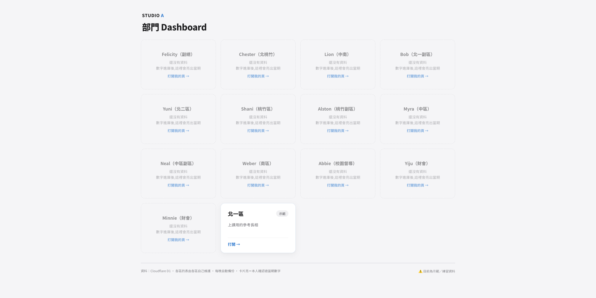
建格 · 餵數字 · 頁上線 —— 按下確認，自己的卡當場亮起來。
4
系統地圖今天會一直回到這張圖
整套系統，只有三個地方。
之後所有操作，都只是東西在這三個地方之間移動 —— 線，今天會一條一條亮起來。
5
三個地方 · 1/3工作發生的地方
你的電腦 = 你的工作桌。
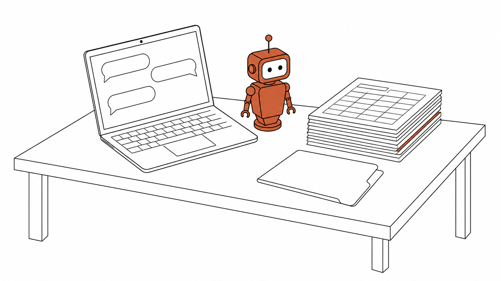
桌上 · 01
助理 —— Claude Code
你用說的，它動手：改網頁、寫資料、跑指令都是它代勞。
桌上 · 02
網站程式的副本
一人一份。在自己桌上改，交出去之前不影響任何人。
桌上 · 03
你自己的資料
課前下載的那批數字 —— 今天就用它，餵進系統。
每張桌上都有一份副本 —— 那正本，在誰那裡？
6
三個地方 · 2/3正本的保管庫
13 張桌子，中間 —— 一個正本。
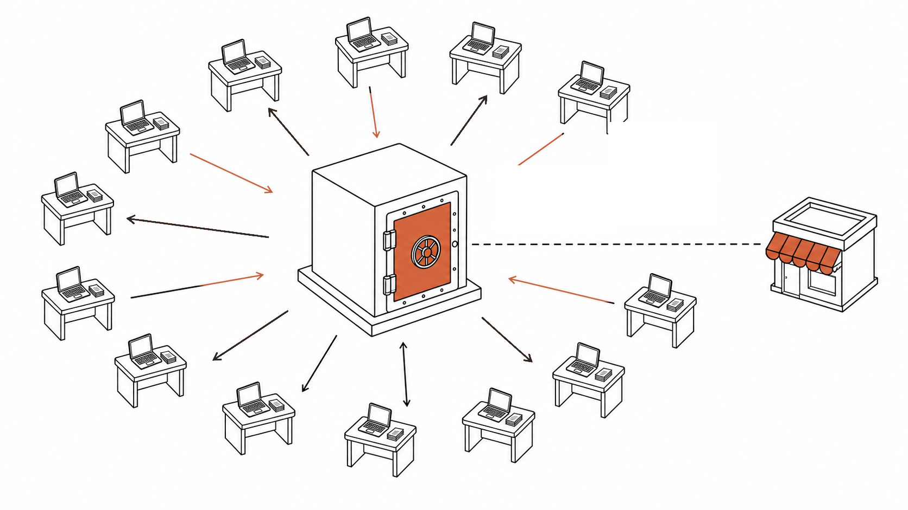
push · 桌 → 庫
交回正本
把你桌上改好的，交回保管庫。
pull · 庫 → 桌
拿回最新版
把保管庫的最新版，拿回你桌上。
每一版都記著
誰、何時、改了哪一行 —— 壞了能還原，所以不用鎖權限。
右邊那間店面 —— 下一頁。
這套「記錄＋同步」的機制叫 git，保管庫叫 GitHub。正本全世界只有一份；你桌上那份，是副本。
7
三個地方 · 3/3開門營業的地方
Cloudflare —— 開門營業的店面。
PAGES
網站
店面本體：入口頁 ＋ 各區自己的頁。GitHub 一收到新版，這裡自動上架 —— 不用任何人動手。
D1
資料庫
所有數字住在這裡。網頁上的數字，是當場來這裡撈的。接下來三頁專門講它。
ACCESS
門禁
站在店門口，名單上的人才放行。它的故事 —— 等你第一次被它攔下來再講。
三個元件、一個帳號全包 —— 網站、資料庫、門禁，全部免費起步（費用的事，等一下拆給你們看）。
8
資料庫你們最熟的場景：65 個 Excel 對帳
資料庫，跟 Excel 差在哪？
你們現在
Excel
一人一檔 —— 每個人存自己的
寄來寄去 —— 版本越寄越多
你打開的，不一定是最新的那份
VS
今天開始
資料庫
一個地方 —— 大家同時寫，不用排隊
永遠只有一份，永遠是最新
網頁自己來撈數字畫圖 —— 不用開檔
Excel 是給人開的 —— 資料庫，是給系統撈的。
9
資料庫怎麼跟它說話
以前要學 SQL —— 現在，你說中文。
資料庫只聽一種語言：SQL。這就是為什麼它一直是 IT 的東西 —— 直到現在。
→
CLAUDE CODE · 翻譯
翻成資料庫
聽得懂的話
→
SQL · 它替你講
SELECT SUM(revenue)
FROM north1_weekly
WHERE month = '2026-07';
→
你會看到它在跑這些字 —— 看得懂不用會。等下示範時，注意看它替你講資料庫語言的那一幕。
10
資料庫誰管哪張表
各管各的表 —— 表頭一致，才加得起來。
D1 雲端資料庫 · 全班同一個 · 13 格 —— 自己的格自己餵、自己管，撞不到別人
chester_*lion_*bob_*yuni_*shani_*alston_*myra_*neal_*weber_*abbie_*yiju_*minnie_*felicity_*
每一格裡幾張表，由你的報表決定 —— 你的表全部掛你的名字開頭（示範區 north1_ 目前 6 張）。
但要合起來看 ——
營業額＋銷售額✗電腦眼裡是兩個東西，加不起來；
營業額＋營業額✓
所以，課前請你們把表頭對齊了 —— 那份東西，等下要拿出來用。
11
規格動手前的確認
等下要用的東西，都在手上嗎？
02
要下載哪些欄位 —— 跟大家對過了嗎？
等下建表時，Claude 會問你「這個數字怎麼算」—— D1 你們自己寫過的那些定義，照著答就好；它也會問你的週（或月）怎麼標，看你檔案裡怎麼寫。
這三題都點頭 —— 等下就不會卡。
12
規格共同規則
全班只有兩條共同規則 ——
而且 Claude 自己會照做。
規則 · 01
表名，
掛你的名字
你的表你管 —— Claude 只動你名字開頭的那幾張，13 個人同時建，撞不到。
規則 · 02
刪除，
只是蓋章
資料不會真的消失，只是標記隱藏 —— 一句話就救回來。
這兩條寫在系統規則裡 —— Claude 建表時自己照做，你不用背。
13
規格之後
表頭對齊了 —— 全公司彙總頁不遠了。
今天
13 張表 · 13 頁 —— 各自跑
自己的數字自己餵，不用等任何人
入口頁：一人一張卡，點進各自的頁
之後 · D3 起
表頭一致 ＋ 口徑補齊 —— 加總
入口頁升級：全公司彙總、跨區排名
「加得起來」的前提，你們課前已經鋪好
你們課前對齊表頭那件事 —— 就是在鋪這條路。
14
環境建置拿鑰匙
進場之前 ——
先拿鑰匙。
環境建置 · 45 MIN
15
拿鑰匙接下來全是動手
四步 —— 開帳號 · 配對 · 抓副本 · 進門。
STEP 1
開帳號
用公司信箱，申請你的 GitHub 帳號。
庫 · GITHUB
STEP 2
配對
讓這台電腦，跟你的帳號認得彼此 —— 一次就好。
桌 ↔ 庫
STEP 3
抓副本
把正本抓一份回你桌上 —— 鑰匙也在裡面。
庫 → 桌
STEP 4
進門
過門禁，看到我們已經上線的網站。
店 · 門禁
概念都講完了 —— 接下來全是動手。卡住，直接舉手，助教會巡場。
16
拿鑰匙動手 ① · STEP 1
用公司信箱，開你的 GitHub 帳號。
1
⚠️ 最上面那兩顆「Continue with Google／Apple」別按 —— 那會綁到私人帳號。從下面的 Email 欄開始填。
2
Email 填你的公司信箱
就是 @studioa.com.tw 那個 —— 門禁認它、以後交接也認它。密碼要 15 字以上，或 8 字以上含數字。
3
收驗證碼
寄到公司信箱 —— 在你平常收信的地方。
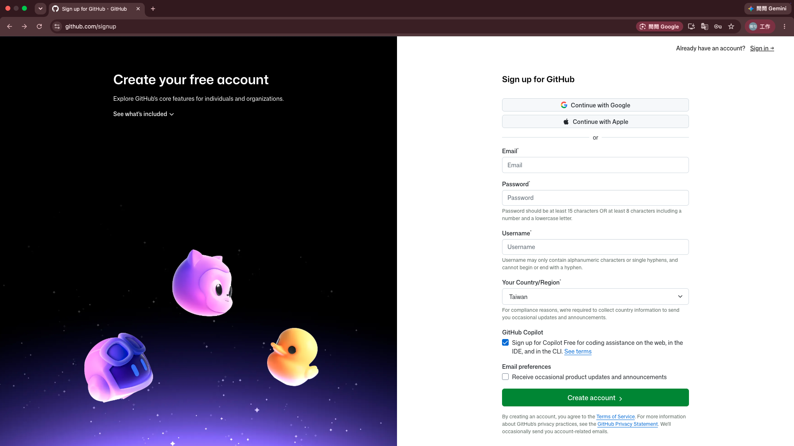
帳號開好了 —— 下一步，讓我知道你是誰。
17
拿鑰匙動手 ① · 回報帳號
告訴我你的帳號 —— 我才加得到你。
1
找到你自己的名字
13 個名字都在上面，照職稱找。
2
填 username → 按 Enter
不是 email、也不是中文名 —— 是註冊時你自己取的那個英文名字。忘了？點 GitHub 右上角頭像，最上面那行就是。
3
點一下你剛填的名字
會打開 github.com／你的名字 —— 看到自己的頁面才算填對。
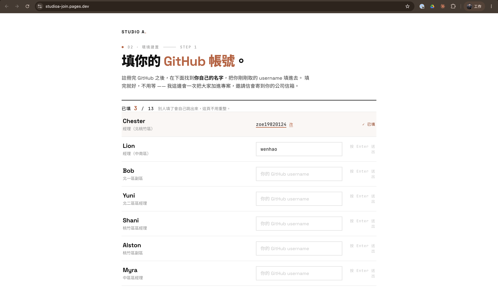
username 在哪裡看 · 右上角頭像
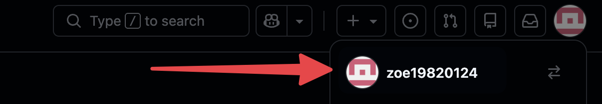
大家都填完，我一次把所有人加進去 —— 邀請信會寄到你的公司信箱。
18
BREAK休息
名字都報上來了 ——
下課 10 分鐘。
這 10 分鐘我不休息 —— 把你們一個一個加進團隊。
回來第一件事：開公司信箱 —— 有封邀請信在等你。
BREAK · 10 MIN
19
拿鑰匙動手 ① · 收邀請信
信到了 —— 按下去，你才真的進得來。
1
回公司信箱找這封信
寄件者是 GitHub、主旨有 studioa-dashboard。收件匣沒有就翻垃圾信。
2
點信裡的 View invitation
會跳到 GitHub 上的接受頁 —— 網址列會看到 studioa-dashboard。
3
按綠色的 Accept invitation
按完就沒事了。7 天不按會過期。
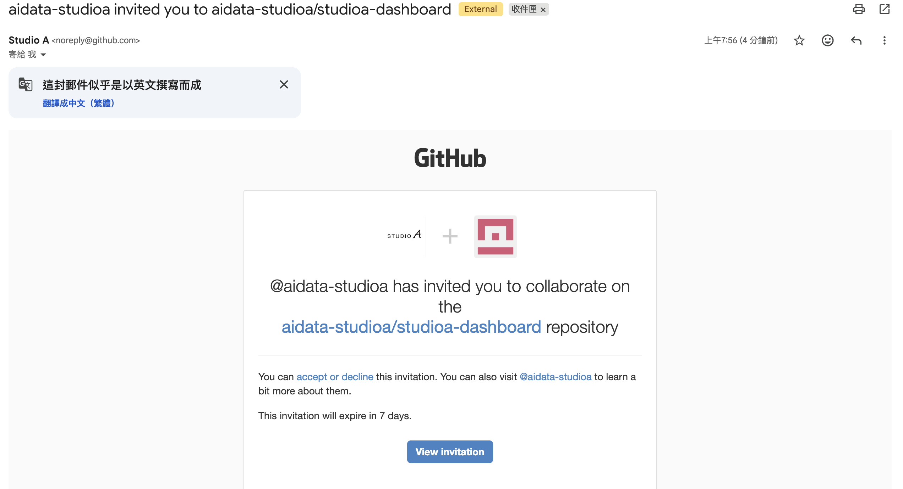
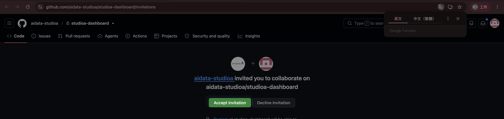
沒按這一顆，等一下 STEP 3 抓副本會抓不到東西 —— 卡住就舉手。
20
拿鑰匙先看一圈
你們的家，已經佈置好了。
.claude/
防護 —— 「真的刪掉」就是在這裡被擋下來的
.github/workflows/
每晚 4:30 自動跑備份的排程
exports/
資料庫的備份檔 —— 明天早上來看今晚那份
functions/api/
傳話員 —— 頁面上的數字，是它去資料庫撈的
public/
├─ index.html入口頁 —— 13 張卡的那面牆└─ regions/你的名字.html你的頁 —— 今天你只動這個
migrations/ .env
設定與紀錄 —— 不用動（螢幕上剩下那幾個也一樣）
你要動的只有一個 —— public/regions/你的名字.html。其他的今天都不用碰。
21
拿鑰匙repo 裡最重要的一份
一份規則，人和 AI 都讀得懂。
CLAUDE.md —— 每一條規則都寫兩層。拿「刪除」這條當例子：
上層 · 白話原則 —— 寫給人（和 AI）的「為什麼」
「刪掉」不是消失，是蓋章隱藏 —— 這樣誤刪永遠救得回。
下層 · 執行規格 —— 寫給 Claude 的「怎麼做」
刪除一律 UPDATE … SET deleted_at = datetime('now')，絕不下 DELETE。
改一份等於改兩份 —— 這份文件同時是 AI 的規則，和你們的 SOP。遇到規則沒寫到的新情況，AI 是靠上層那句「為什麼」在判斷。
22
拿鑰匙動手 ② · STEP 2
幫這台電腦，跟你的帳號配對。
1
終端機：gh auth login
跟著我一步一步選 —— 選錯沒關係，重跑一次就好。
2
把那八碼填進瀏覽器
終端機給你一組像 F6E8-ED7E 的碼，貼進跳出來的頁面 → 按 Continue。
就像手機第一次連車上的藍牙 —— 配對一次，之後上車自動連。認的是這台電腦，不是每次問你是誰。瀏覽器上 GitHub 照常打帳密 —— 跟這組配對碼無關。
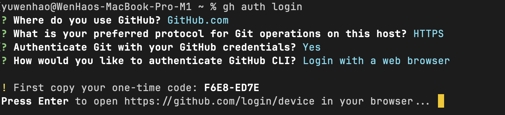
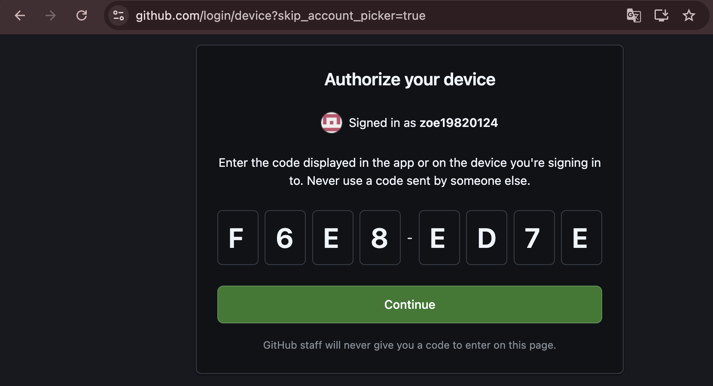
配對好，Claude 才進得去保管庫 —— 換電腦，才要再配一次。
23
拿鑰匙動手 ③ · STEP 3
把副本抓回你桌上 —— 鑰匙已經在裡面。
照貼 · 終端機
cd ~/Desktop
git clone
https://github.com/aidata-studioa/studioa-dashboard.git
1
貼上去
副本會出現在你桌面 —— 資料夾叫 studioa-dashboard。
2
用 VS Code 打開它
會跳一個視窗問你信不信任這個資料夾 —— 按信任。
什麼都不用設定 —— 資料庫的鑰匙，跟著副本一起下來了。
桌上到齊：助理 · 副本 · 鑰匙 · 你的資料 —— 只差進門。
24
拿鑰匙動手 ④ · STEP 4 · 全班一起
開網址 → 輸 email → 收信 → 點 Log in。
2
輸入公司 email
你的 @studioa.com.tw —— 門禁查名單。
3
收信 → 點 Log in
點信裡的橘色按鈕就進來了 —— 不用抄驗證碼。
4
進來了
兩週內免重驗 —— 下週再開，不會再被問。
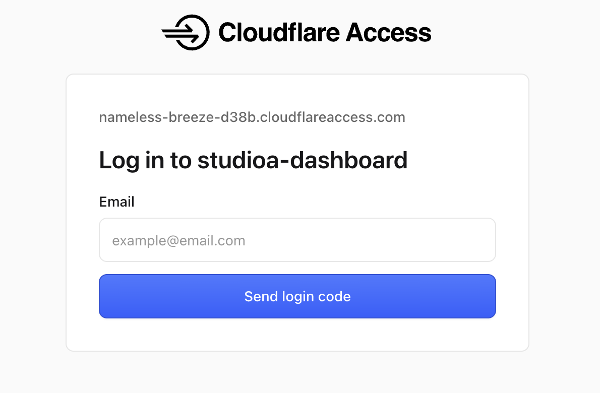
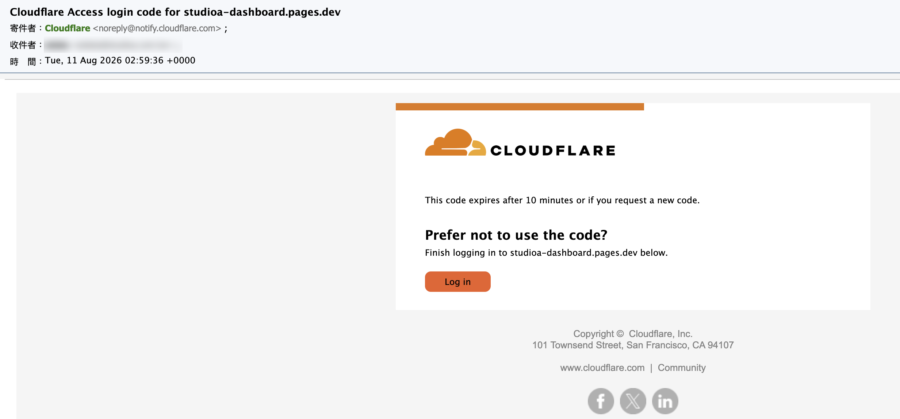
你剛剛被一道門攔下來、又放行 —— 下一頁，拆給你看。
25
拿鑰匙剛剛那道門
我們沒寫過任何登入程式 —— 門口站了個警衛。
沒有警衛的網站
知道網址 ＝ 進得來
連結被轉發一次，就是全世界進得來 —— 網址本身，擋不住任何人。
我們的網站 · 有警衛
知道網址，只是走到門口
警衛查證件（email）—— 名單上的 16 個人才放行；不在名單上，連驗證信都收不到。
警衛是現成的門禁服務 —— 所以我們的網站，一行登入程式都沒寫。
連結一定會被轉發 —— 擋得住的，是門口的警衛。
26
系統地圖第 2 次出現
地圖上，你已經走過兩條線。
兩條亮了、三條還暗著 —— 下半場一條一條點亮。鑰匙拿齊了，接下來 —— 接管。
27
示範第二幕
鑰匙在手 ——
接管這套系統。
講師示範 · 20 MIN
28
示範看我做一遍
先看我跑完整一圈 —— 等下就是你。
看點 · 01
改一個東西，
全公司看到
改示範頁的一個地方 → 交回去 → 一分鐘後上線。
看點 · 02
餵一筆數字，
頁面自己更新
不碰任何程式 —— 數字進資料庫，頁面當場撈。
看點 · 03
刪一筆、救回來 ——
再叫它「真的刪」
看這個系統怎麼反應。這段最重要。
過程裡會冒出幾個新名詞 —— 都只在它出現的當下講。
29
示範路線 A · 改長相
說需求 → 它改 → push → 一分鐘後全公司看到。
新名詞 · 自動部署
保管庫一收到新版，店面自動換上 —— 沒有人按任何按鈕。這就是地圖上的 ③。
這條叫路線 A · 改網頁 —— 改的是長相，走保管庫。
30
示範路線 B · 改數字
數字不走 GitHub —— 直接寫進資料庫。
新名詞 · 鑰匙（token）
只能開資料庫的那把 —— 別的門開不了。clone 時就在你桌上了。
新名詞 · wrangler
它操作資料庫用的工具 —— 你會看到它在跑，看得懂不用會。
這條叫路線 B · 改資料 —— 數字一直在變，程式不用跟著變。頁面多新，取決於資料進來多勤 —— 今天手動餵週；之後可以自動撈、自動餵。改的是頻率，不是系統。
31
示範最重要的一段
叫它硬刪 —— 它不肯。
> W32 那筆先刪掉
✓ 已標記刪除（蓋章）—— 頁面退回 W31
> 救回來
✓ 回來了 —— 一個字沒少
> 真的刪掉，不要蓋章
⊘ 我不代辦 —— 硬刪由管理者自己到後台動手
刪掉＝蓋章，救得回來 —— 硬刪，它不代辦。怎麼凹都一樣 —— 為什麼要這樣設計，等一下拆給你們看。
32
示範為什麼敢讓 13 個人同時動手
刪不壞 —— 靠系統，不靠小心。
第一層
刪除，
只是蓋章
誤刪不是災難 —— 一句話救回來。剛剛你們親眼看過。
第二層
真刪，
擋兩道
一道寫在規則裡 —— AI 讀了自己就不做，剛剛你們親眼看過；一道寫在系統裡 —— 就算有人繞過 AI 自己下指令，一樣被擋。
第三層
每晚，
自動備份
就算整個資料庫毀了，最多回到昨天 —— 而且沒有人需要記得做這件事。
誠實講清楚：它救的是「誤刪」—— 數字改錯，系統不會知道，還是要自己看一眼。
33
示範那個地方長這樣
真的要刪 —— 有人得登進來。
① 左側 Storage & databases
→
② D1 SQLite Database
→
③ Console 打指令
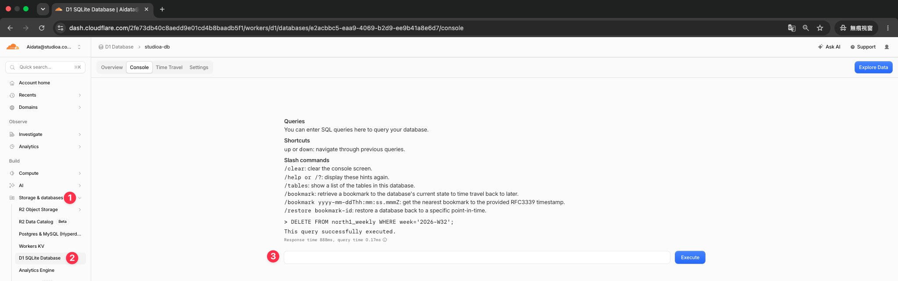
同一件事 —— 在你電腦上怎麼求都不成，在這裡一句就成。差別是「有沒有人拿帳號密碼登進來」—— 而 AI 到不了這裡。
34
示範收束
改網頁走保管庫、改數字進資料庫 —— 分不清？不用分。
路線 A · 改網頁
長相變了 —— 走保管庫
版面、圖表、欄位顯示 —— 說需求，它改
「幫我 push」→ 約一分鐘，全公司看到
路線 B · 改資料
數字變了 —— 憑鑰匙直達
每週餵數字、修一筆錯的 —— 給它就好
重新整理，頁面當場撈到新數字
組合題：「我想加毛利率的圖」＝ 先 B 再 A —— 先讓資料就位，再讓頁面去畫它。資料不在，圖就是空的。
你只管說你要什麼 —— Claude 自己走對的路。這張圖是幫你看懂發生了什麼 —— 不是要你背。
35
BREAK休息
下課 10 分鐘。
回來就輪到你 —— 四步，把你的卡點亮。
BREAK · 10 MIN
36
換你動手今天的主場 · 60 MIN
四步 —— 先上線 · 餵數字 · 接起來 · 確認。
STEP 1
先讓它
上線
你已經做好的那份報表，原封不動放上去 —— 一分鐘後全公司看得到。
路線 A
STEP 2
建格 ·
餵數字
課前下載的那批檔丟給它 —— 數字進資料庫，不用 push。
路線 B
STEP 3
把數字
接起來
頁面改成從你自己的表撈 —— 之後它自己會更新。
兩條路交會
STEP 4
確認
亮卡
開自己的網址看過沒問題 → 按「確認」—— 你的卡亮。
收尾儀式
門市、財會、特別軌 —— 同一條路，只差餵的資料。第一步做完你就已經在牆上了，後面每一步都是加分。
37
換你動手開工前 · 兩分鐘
開工前 —— 把東西搬到同一個屋簷下。
① 開對資料夾
在 studioa-dashboard
開 Claude Code
不是在你自己的 FLUX 資料夾 —— 開錯了，後面四步都不會動。已經開著別的專案就關掉，重開這個。
② 把檔案拖進去
報表 ＋ 課前下載的資料
一起丟進 inbox/
用 Finder 拖就好，不用打指令。一次搬完，後面四步都不用再找檔案。
③ 開了才看得到
public / regions /
abbie.html
neal.html
alston.html
north1.html
bob.html
shani.html
chester.html
weber.html
felicity.html
yiju.html
lion.html
yuni.html
minnie.html
myra.html
這裡面有一個是你的名字 —— 今天你只會動到那一個。（north1 是剛才那個示範頁）
為什麼一定要拖進去：Claude Code 只看得到你開它的那個資料夾。留在桌面或下載資料夾，它讀不到 —— 不是不肯，是看不到。
④ 讓它認識你 · 照貼
我是 {你的名字}。幫我建一個 CLAUDE.local.md 記著這件事，之後你就不用再問我了。
這幾件做完 —— 後面四步，每一步照貼一句話。
38
換你動手STEP 1 · 路線 A
先讓它上線 —— 一分鐘後全公司看得到。
照貼 · 第一句 ⚠️ { } 都要換掉
把 inbox/ 裡的 {你的報表檔名}，換成 public/regions/{你的名字}.html。
先照原樣換上去就好，標題和數字等一下再處理。
例：把 inbox/ 裡的 我的週報_W31.html，換成 public/regions/bob.html。
推之前先看一眼
在 Finder 雙擊它改好的那個檔，瀏覽器直接開。
數字還是舊的
正常。這一步只搬長相，數字下一步才接。
這一步做完，你就已經在牆上了 —— 後面每一步都是加分。
39
換你動手STEP 2 · 路線 B
建你的格，把數字餵進去。
照貼 · 一句就好
我的數據也在 inbox/，幫我把數字放進資料庫（D1）。
D1 是那個資料庫的名字 —— Cloudflare 上的那一個。13 個人的數字都住在裡面，各有各的格。
它會先講一遍才動手
哪個檔進哪張表、各幾筆 —— 它列給你看，你說「好」它才寫。不對就當場喊停。
13 個人同時餵
各寫各的格，不用排隊 —— 資料庫天生就是給多人同時記帳的。
順手驗一筆
請它查一筆你有印象的數字 —— 對得上，就進下一步。
數字進了資料庫 —— 憑的是你桌上那把鑰匙。這一步不用 push，畫面也不會變 —— 數字走的是路線 B，直接進資料庫；下一步接上去它才會活過來。
40
換你動手STEP 3 · 兩條路交會
把數字接起來 —— 這頁從此自己會更新。
照貼 · 一次講完
把我那一頁的數字，改成從我自己的表撈。
標題和頁尾也改成我的區，「示範資料」那句拿掉 —— 現在是真的數字了。
改完 · 直接推
幫我 push
這次沒辦法先看 —— 頁面現在要跟資料庫講話，本機打開撈不到數字。推上去等一分鐘，再開自己的網址驗收。
這一秒最關鍵
在這之前數字是死的。接上之後 —— 下週餵新數字，這頁自己就變了（永遠顯示最新那一週），不用再改程式。
想改什麼就說
「達成率不到的標紅」「加一張趨勢圖」「加一個週別選單」—— 說需求就好，跟示範頁走的是同一條路。
確認鈕不用管
整頁重寫也弄不丟 —— 系統會自動幫每一頁補上。
上線了 —— 開自己的網址看過沒問題，就可以確認。這一步比前面兩步久 —— 你報表裡每一個數字都要換成從資料庫撈。慢慢來，卡住舉手。
41
換你動手STEP 4 · 收尾儀式 · 全班一起
看過沒問題 —— 按下「確認」。
確認的意思是：我自己看過了，這頁可以給大家看。投影幕上，你的卡當場亮。確認不是鎖定 —— 之後照樣能改、能 push；晚一點確認也不會怎樣，牆等你。
你的卡亮的那一刻 —— 全班看得到。
42
換你動手不做週報的，做這個
同一條路 —— 做的是你自己的工具。
CHESTER
獎金查詢工具
現況：兩個 Excel ＋ 巨集，每月手動更新
今天：建自己的格 → 餵獎金資料 → 查詢頁
LION
全省整合儀表板
現況：輪值的全門市週報，每週手工整合
今天：建自己的格 → 餵 ERP 匯出檔 → 整合頁
四步一模一樣 —— 只是餵的資料不同；兩位坐前排，卡住優先支援
財會三位走主線 —— 做的是全公司那份表
這條路不是週報專用 —— 你的工作是什麼形狀，系統就長成什麼形狀。
43
換你動手計時
動手中 —— 卡住直接舉手。
開工前 開對資料夾 · 檔案拖進 inbox/
STEP 1 先上線 —— 現成報表推上去
STEP 2 建格 · 餵數字
STEP 3 接起來 —— 數字改成從自己的表撈
STEP 4 自己驗收 → 確認亮卡
先做完的 —— 加一個指標、多餵一週數字，或幫隔壁一把。
44
拆解第三幕
這棟大樓 ——
今天起是你們的。
拆開看 · 20 MIN
45
拆解先看它是怎麼組起來的
這套系統，是四個零件湊出來的。
13 個人同時改，沒人蓋掉誰
要有一個放正本的保管庫 —— 那是 GitHub
push 完一分鐘，網址上就有
要有一個自動開門的店面 —— 那是 Pages
數字換了，頁面自己跟著變
數字要有自己的格，跟頁面分開住 —— 那是 D1
營收不能給外人看見
門口要站一個警衛 —— 那是 Access
CLOUDFLARE · 一個帳號全包 · 基本免費
四個零件，你今天四個都用過了 —— 接下來拆的是：它們是誰的、要多少錢。這四個怎麼串起來的，我寫成一份說明書掛在站上了 —— 入口頁最下面「📖 系統說明書」。今天不用讀，回去卡住的時候再開。
46
拆解為什麼是它、要多少錢
三件事、一個帳號 —— 而且不用錢。
不用三個供應商、三張帳單、三套權限。
網站 ＋ 資料庫 —— 免費，連卡都不用留
資料庫 · 容量
5 GB
就算改成每天餵 —— 也是幾十年份的量
資料庫 · 每天寫入
10 萬列
13 個人每天各餵一次 ≈ 幾百列
資料庫 · 每天讀取
500 萬列
開一次頁撈幾十列
網頁請求 · 每天
10 萬次
13 個人在看
門禁 —— 唯一要留一張卡的地方
它是另一條產品線，開通時一定要留一張卡 —— $0、純登記，不會扣款。目前掛的是我的，交接當天換成你們管理員的。
這些額度，是給整間公司天天用的規格 —— 你們 13 個人，用不完。就算真的超過，也是擋不是扣款 —— 資料庫暫停查詢、第 51 個人進不來。不會有帳單跳出來。
47
拆解這套系統住在誰家
帳號，從第一天就是公司的。
1
用公司信箱開的專用帳號
Peggy 協助申請的 studioa 公司信箱 —— email 身分從第一天就是你們的。
2
整套系統都建在裡面
網站、資料庫、門禁 —— 都在這個帳號底下，不在我的。
3
課後交資訊管理
人員異動＝加減兩份名單（門禁＋GitHub 成員），一年沒幾次。
交接那天要做的，只有
換密碼。
網址不變、資料不搬、備份歷史不歸零 —— 因為家本來就是你們的，走的只是我。
交接不是搬家 —— 是換密碼。
48
拆解今天遇到的三次「登入」
三道門，查的是三個身分。
GitHub 查兩件 —— 名單上有你 ＋ 這台電腦配對過，缺一不可
名單＝repo 協作者（授權）· 配對＝今天做過那次（證明是本人）
警衛查 email —— 在 16 人名單上、收得到驗證信
名單在 Access（Cloudflare 後台）—— 怎麼加減人，待會就教
只認鑰匙，不認人 —— 認「能開什麼」，不認「你是誰」
鑰匙＝repo .env 那把 token —— 只開得了資料庫，開不了別的
49
系統地圖第 4 次出現 · 收束
五條線 —— 全亮了。
實線，是你發動的；虛線，機器自己跑
50
收尾最後一段
大樓拆開看完了 ——
最後一件事：交接。
收尾 · 15 MIN
51
收尾交給你們
這套系統，交給你們了。
裡面住著：門禁名單（看網頁）· D1 鑰匙（寫資料）· 真要硬刪的後台
裡面住著：協作者名單（改網頁）· 程式正本與每晚的備份檔
整套系統的鎖，全部長在這兩個帳號上 —— 所以交接不用搬任何東西。
1
換兩組密碼
Cloudflare ＋ GitHub —— 換完，名單、鑰匙、後台，全部歸你們。
2
換門禁那張登記卡
目前掛我的（$0 純登記，不會扣款）—— 換成你們管理員的。
3
把「走的人」流程跑第一遍
對象：我，和課前測試帳號 zoe —— 名單劃掉、鑰匙換掉。怎麼做，下兩頁。
手冊三份：入口頁 footer「📖 系統說明書」（白話版）· repo README（怎麼用）· CLAUDE.md（資料規則）
52
收尾人員異動 · 交接後的日常
一個人 ＝ 三樣東西。
email
掛在門禁名單上（看網頁）
加一行
刪一行
GitHub 帳號
掛在協作者名單上（改網頁）
加一行
刪一行
鑰匙副本
躺在他電腦的 clone 裡（寫資料）
clone 下來就有
收不回來 —— 換鎖
發三樣、收兩樣、換一把 —— 名單擋新的，換鎖才作廢舊的。實際去哪裡按、鎖怎麼換 —— 下一頁，交接後翻回來查。
53
收尾動手的地方 · 交接後當手冊查
要按的地方，就三個。
① 門禁名單（email）
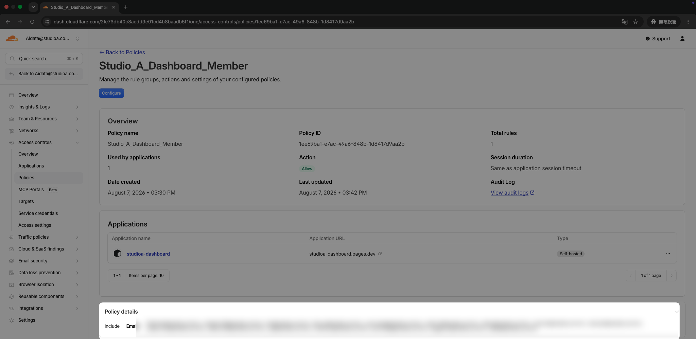
Zero Trust → Access controls → Policies → Studio_A_Dashboard_Member → Include · Emails —— 加／刪一行，當場生效
② 協作者名單（GitHub 帳號）
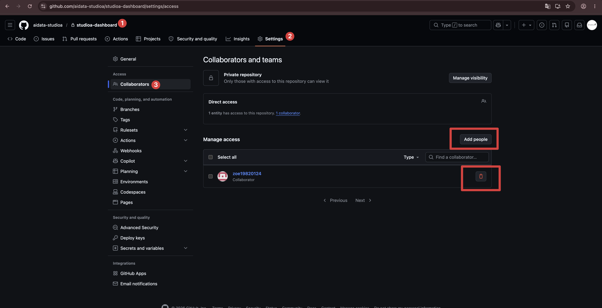
repo → Settings → Collaborators —— Add people 加人／垃圾桶移除
③ 換鎖（走一個人才做）
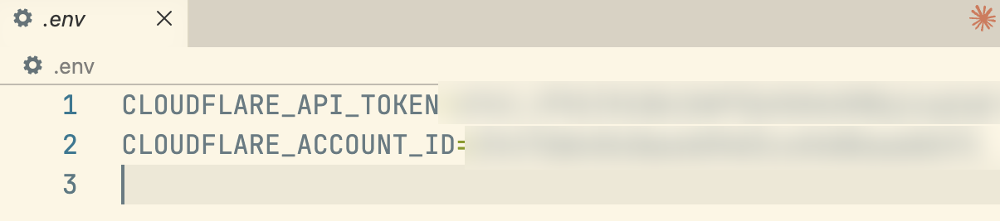
1
Cloudflare 後台重發 D1 token
2
更新 repo 的 .env（左圖那兩行）
3
push —— 13 台電腦下次 pull 就換好
順序不能反：先移名單、再換鎖 —— 不然新鑰匙他照樣拉得到。
改完 · 自己驗兩招
① 無痕視窗開網址 —— 被攔下來要 email
② 不登入打資料網址（/api/…）—— 一個數字都不吐
一年翻不了幾次 —— 交接之後，這頁當手冊用。
54
收尾帶走的 · 回去做的
今天帶走三件 ——
回去做一件。
1
上線的系統
入口牆上，你的卡亮著 —— 網址發出去就能看。
2
自己的頁、自己的表
打開就是你的數字 —— 改它，只影響你自己。
3
兩條路口訣
改網頁走保管庫、改數字進資料庫 —— 分不清？不用分，跟它說就好。
回去做的 · 就一件
一起把它養成 ——
部門的數據中心＋儀表板。
先對齊：哪些報表要做、外觀與資料格式、更新的頻率。
然後照對齊的節奏 —— 餵進去、看過、按確認（週報的每週、月報的每月）。
餵得煩的地方記下來 —— D3 就從那裡開始，教它自動跑。
55
收尾今天做的，只是起點
同一個資料庫，五種用法。
讀
定期報表
有敘事、讀完做決策。
長大後 —— 時間到自動跑，這期報表自己先出一版，你看過再定。
今天 · 你們的 D1 週報
掃
儀表板
30 秒掃完現況。
長大後 —— 每天早上自動從 ERP 抓數字進資料庫：人還沒到，板上已經是今天的。
今天 · 你的區頁
查
查詢工具
固定輸入，一問一答 —— 選個員工編號，最新明細自己出來。
長大後 —— 開放同仁自助：自己的明細自己查，不用再來問人。
今天 · Chester 的獎金查詢
叫
警示通知
不用天天看 —— 出事它來找你。
長出來 —— 條件寫好放著：達成率不到 80%，隔天早上信自己到。
D3 起
收
輸入表單
反向 —— 把數字收進來的頁。
長出來 —— 同仁上傳檔案，格式、內容、區間先檢查：不對，退回重送；對了，自動併進主表，儀表板跟著更新。
D3 起 · 財會收各區資料
還有一條 · 直接問
上面五種，都是先做好、放著給同仁用的 —— 維護的人不用這些，直接問：「中區這週毛利多少？」「那哪家店掉最多？」它當場查資料庫、當場答，追問到底；要報表，現場寫一份。今天一整天，你走的就是這條路。
56
收尾下一步
今天：做得出來。
D3：做得更省力。
D3 · 01
把流程做成 skill
今天這套教過一次，之後一句話整套照跑 —— 餵完數字它自己跑、給你網址、問你一句，你點頭，它按確認。
D3 · 02
用 AI 做知識管理
部門的文件、規則、經驗 —— 放得進、找得到，用問的就出來。
D3 · 03
用 AI 做投影片
報告要用的投影片 —— 數字和結論給它，整份直接生出來。
57
END · D2下課
系統上線了 ——
下週起，是你們在跑。
余文皓 · D2 END
8/19 D3 見 —— 下週一，記得餵數字。
58